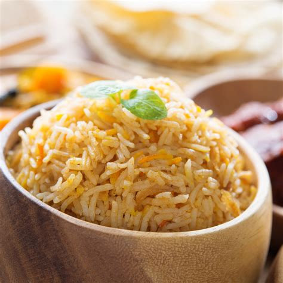

Rice Biryani

Description
Rice biryani is basically just meatless biryani. In my recipe in consists of an oily sauce that contains various spices and ingredients, all served covered by Basmati rice.
Take note that this is my recipe, and it is in no way, shape, or form authentic to Indian cuisine. I had to make do with what I have available.
Ingredients
- 250 grams of White Basmati Rice
- A heaping teaspoon of Biryani Masala
- Half a teaspoon of Garam Masala
- Half a teaspoon of Brilliant Red Chili Powder
- One Onion (Peeled, Halved, Thinly Sliced)
- One Tomato (Peeled, Halved, Thinly Sliced)
- One Chili Pepper (Sliced down the middle)
- Two Bay Leaves
- A Star Anise
- A Cinnamon Stick
- 100 mL of Coconut Cream (Not Coconut Water)
- One Cube of Chicken Bouillon
- 1 tablespoon of Ginger Garlic Paste
Steps
- Wash Basmati Rice until water runs clear. Let soak in a container full of water. We will be using this water to boil the rice later.
- In a deep pot, saute the Onion, Tomato, Chili Pepper, Bay Leaves, and the Star Anise. Keep the heat medium-low.
- Once onions are translucent and slightly browned, deglaze with a little bit of water.
- Once the water is bubbling a bit, dump in the Coconut Cream, all the spices, and the Ginger Garlic Paste.
- Stir once in a while so the Coconut Cream won't burn. Turn the heat off once the mixture starts to become really oily. Dump contents in a bowl and save for later.
- Dump in the soaked rice, including the water it was soaking in, into the pot. No need to clean it. There is no specific ratio of rice to water since it won't be cooked in the traditional Asian way. Just use a lot, but only up until an inch before the rim.
- Heat covered on medium until water boils. Take the lid off and stir the rice once in a while. Kill the heat once rice is translucent or has expanded and elongated. My rule of thumb is that once the rice doesn't easily sink to the bottom, it is nearly done.
- Pour the water with rice over a large strainer until the water stops flowing. There should be some rice in the strainer, but not a lot. Since we will be covering the 'sauce' with rice, you should put as much rice as possible on the strainer, even after it has drained.
- Dump the sauce in the pot with rice, then dump the rice in the strainer over the sauce so it covers it. Cover the pot with a lid and heat on the lowest possible setting on your stove for at least 5-10 minutes. (I use this time to wash dishes)
- Let rest, covered, for 10 minutes. Mix thoroughly before serving. Enjoy!
Back to Home Page